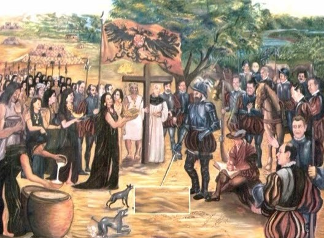
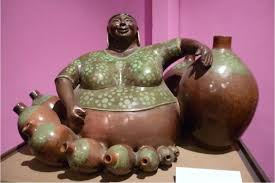
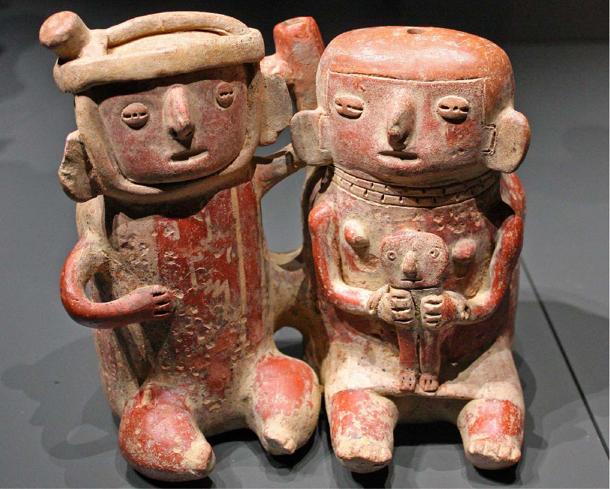

Piura, originalmente establecida como San Miguel de Piura, se alza como una ciudad emblemática en el norte del Perú, siendo la capital de su respectivo departamento. Ubicada estratégicamente en el centro oeste de la región, en el fértil valle del río Piura, esta urbe posee una historia rica y significativa.
Fundada en el año 1532, Piura ostenta el título de ser la primera ciudad establecida por los españoles en Sudamérica. Su nombre, derivado del quechua "Pirhua", que significa granero o depósito de abastecimiento, evoca su importancia como centro de suministro en tiempos ancestrales para los habitantes quechuas de la región.
Durante los años que siguieron a su fundación, especialmente entre 1535 y 1570, Piura emergió como un centro de relevancia en el panorama regional. A lo largo de este período, la ciudad acogió a distinguidos visitantes y experimentó un temprano intento de planificación urbana integral. Testimonios de este pasado glorioso se encuentran en la presencia de la Iglesia Matriz, el Convento de Mercedarios y las Casas del Cabildo, que evidencian el florecimiento de Piura en el siglo XVI. En ese entonces, la ciudad contaba con alrededor de cien vecinos, consolidándose como un punto de referencia en el panorama colonial.
El legado histórico y cultural de Piura perdura hasta el día de hoy, recordando su papel pionero en la historia de Sudamérica y su relevancia como centro urbano en la región norte del Perú.

ANTIGUAS CULTURAS
-Ubicación:
Vicus: La cultura de Vicus estaba ubicada en las provincias de Morropón, Ayabaca y Huancabamba (departamento de Piura), más específicamente hablando, en la ciudad de Chulucanas.
Tallanes: Esta cultura denominada tallan o tallanca (denominación con origen de taclla, herramienta agrícola) fue una etnia que se asentó en la costa norte del departamento de Piura, tuvo un crecimiento.

- Sociedad:
Vicus: Vicus tenía un sistema político militarista y teocrático. Su estructura social era jerarquizada: los monarcas y nobles; los soldados; los comerciantes; los agricultores; y, por último, los esclavos. Su sede administrativa se encontraba en el cerro Vicús.
Tallán: Estos estaban organizados en parcialidades, esto significa que todos sus miembros se dedicaban a una misma y a una única actividad dada, principalmente eran las actividades de la agricultura y la pesca. Luego, mediante un trueque con las parcialidades vecinas, lograban obtener lo necesario para sobrevivir.

-Divinidades:
Vicus: Los Vicus creían que los dioses provenían del mar y por esto lo respetaban. Al igual que muchas culturas andinas ellos veneraban al sol ya que pensaban que se metía a lo profundo del mar para luego salir ileso. El dios principal de la cultura Vicús fue Aia Paec, “el degollador”. Se representaba como un ser antropomorfo con colmillos de felino. El recibía sacrificios en ceremonias, para favorecer las cosechas, otro poder que se creía que tenía era que podía transformar a los seres humanos en demonios.
Tallán: La cultura Tallán, desarrollada en la región de Piura en el norte del Perú, tenía divinidades y creencias propias. Uno de sus principales dioses era Ñam-Lap, considerado un héroe cultural que se divinizó como un dios del mar y la fertilidad. Además, los Tallanes adoraban a las huacas, que eran objetos sagrados naturales como montículos, piedras o árboles, y probablemente rendían culto a elementos de la naturaleza como el sol, la luna, las estrellas, la tierra y el agua. También practicaban el culto a los ancestros, venerándolos como protectores y benefactores de la comunidad.
-Aportes culturales:
Vicus: Esta cultura destacó por sus cerámicas, algunas de ellas se encuentran en la Galería Nacional de Arte DC, Museo Solomon R. Guggenheim en New York, EEUU. Estas representaban la idiosincrasia del pueblo, y se usaban en rituales ceremoniales y funerarios. También resalta por sus vasijas cantarinas que producen tonos a medida que se sirve el agua o el licor. También por las cerámicas de dos cuerpos con motivos ornamentales, que representan serpientes y jaguares. Estos lanzan silbidos feroces para ser utilizados en sus ritos ceremoniales y funerarios.
Tallán: La cultura Tallán, en la región de Piura, aportó varios elementos culturales significativos. Desarrollaron avanzados sistemas de irrigación para la agricultura y producían cerámica con diseños geométricos y figuras zoomorfas. Construyeron grandes estructuras ceremoniales y eran expertos en pesca y comercio, estableciendo rutas con otras culturas andinas. También eran hábiles tejedores y tenían una organización social jerarquizada con líderes religiosos y políticos. Estos logros influyeron en las culturas sucesoras y contribuyeron al desarrollo del norte del Perú. En la construcción utilizaban el barro y el adobe. Los techos eran inclinados, de dos aguas e incluían tragaluces construidos hacia la puesta del Sol para mayor ingreso de la luz.